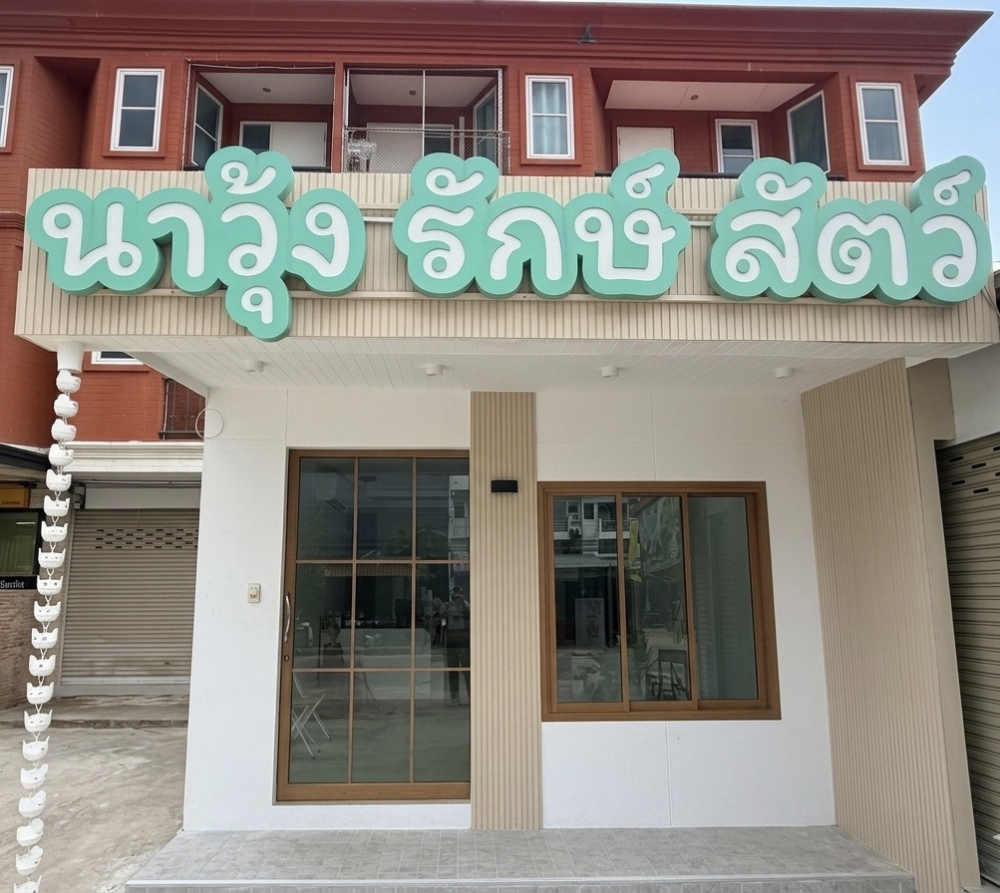
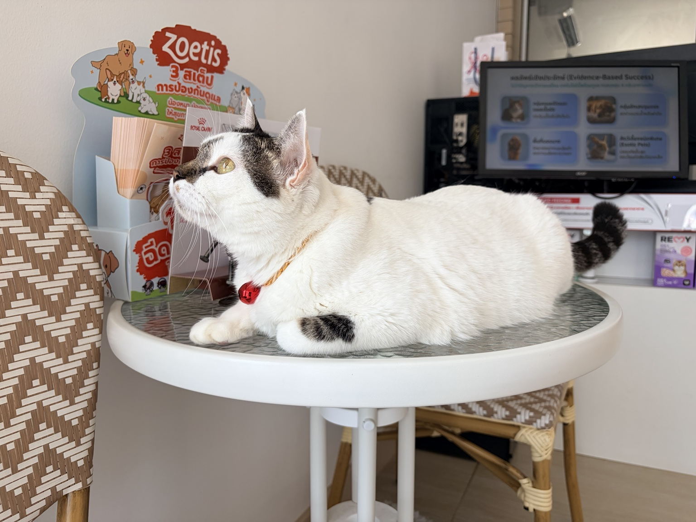
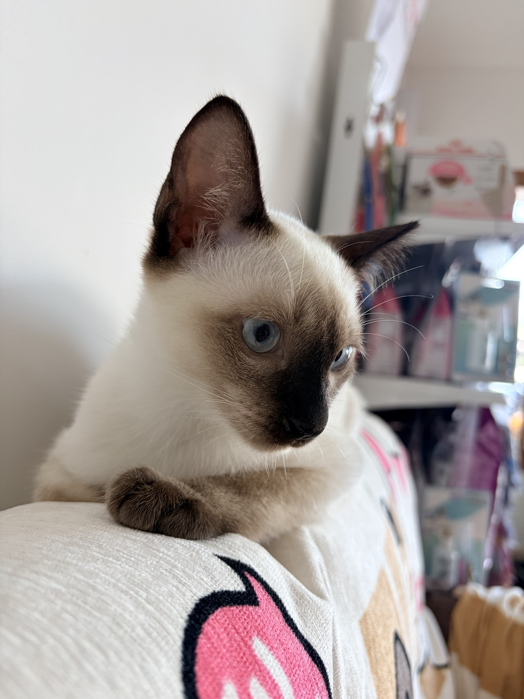
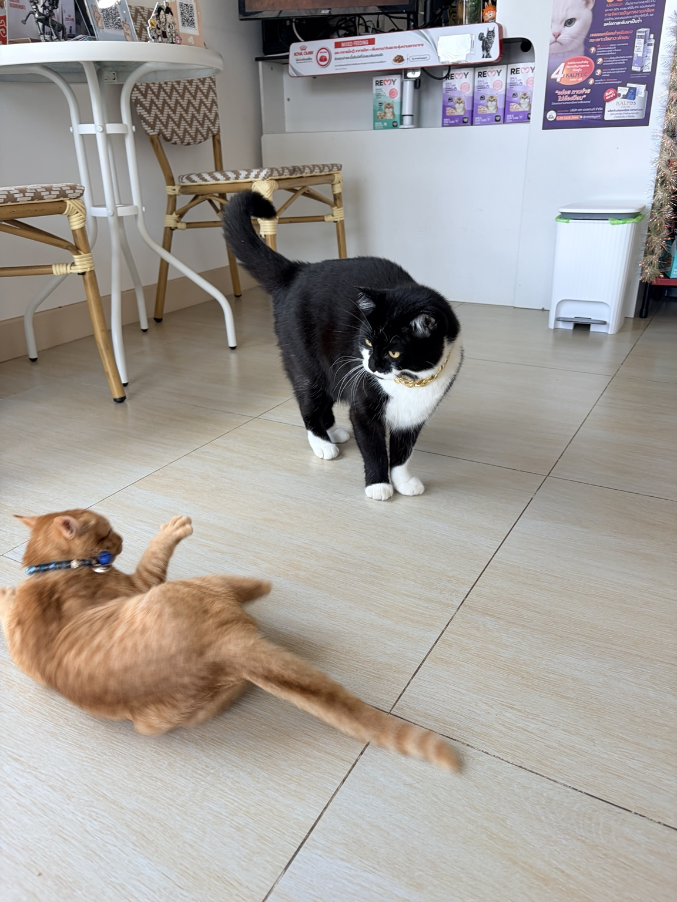
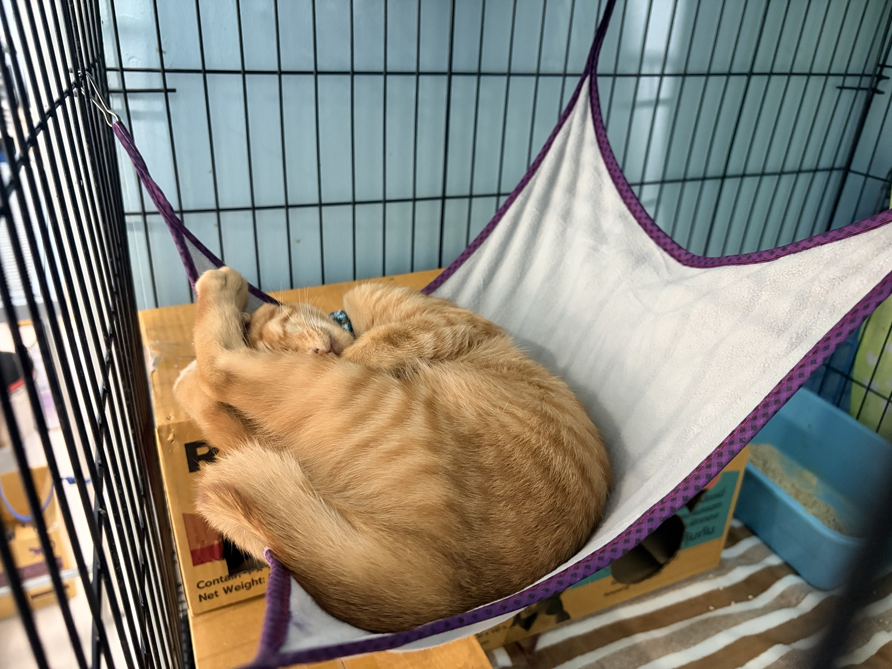

01
GENERAL MEDICINE
ตรวจรักษาโรคทั่วไป
ตรวจอาการและดูแลสุขภาพสุนัขและแมว
สอบถามเรื่องตรวจรักษาCOMPASSIONATE CARE, CLOSE TO HOME
คลินิกดูแลสุนัขและแมว · เพชรบุรี
นาวุ้งรักษ์สัตว์ ดูแลตั้งแต่การตรวจรักษาและวัคซีน
ไปจนถึงการทำหมัน ผ่าตัด และตรวจสุขภาพ
พร้อมเป็นส่วนหนึ่งในการดูแลสัตว์เลี้ยงของคุณ
สุนัขและแมว • ปิดทุกวันพุธ • ติดต่อผ่าน LINE หรือโทรศัพท์

OUR SERVICES
เลือกดูบริการที่ต้องการ แล้วติดต่อคลินิก
เพื่อสอบถามรายละเอียดและนัดหมาย
GENERAL MEDICINE
ตรวจอาการและดูแลสุขภาพสุนัขและแมว
สอบถามเรื่องตรวจรักษาPREVENTIVE CARE
สอบถามโปรแกรมวัคซีนที่เหมาะกับอายุและประวัติของสัตว์เลี้ยง
สอบถามเรื่องวัคซีนSURGERY
ติดต่อเพื่อนัดหมายและรับคำแนะนำก่อนเข้ารับบริการ
สอบถามเรื่องผ่าตัดIN-HOUSE LABORATORY
มีห้องแล็บภายในคลินิก สามารถตรวจเลือดและรอรับผลได้ที่คลินิก สอบถามรายการตรวจและระยะเวลารอผลกับเจ้าหน้าที่
สอบถามเรื่องตรวจสุขภาพGET TO KNOW US
นาวุ้งรักษ์สัตว์ให้บริการดูแลสุนัขและแมวในจังหวัดเพชรบุรี ตั้งอยู่ที่ตำบลนาวุ้ง อำเภอเมืองเพชรบุรี
ดูสถานที่และรีวิวบน Googleตรวจเลือดและรอรับผลได้ที่คลินิก ติดต่อสอบถามรายการตรวจ ค่าใช้จ่าย และระยะเวลารอผลก่อนเข้ารับบริการ
พูดคุยผ่าน LINE โทรศัพท์ หรือ Facebook เลือกช่องทางที่สะดวกสำหรับคุณ
ดูภาพหน้าร้านจริง ที่อยู่ และเส้นทางจาก Google Maps ก่อนเดินทาง
LIFE AT NAWUNG
แวะมารู้จักมุมต่าง ๆ ของนาวุ้งรักษ์สัตว์
ผ่านภาพจริงและโมเมนต์เล็ก ๆ ของน้องแมวในคลินิก




PLAN YOUR VISIT
ข้อมูลเล็กน้อยที่ช่วยให้การติดต่อ
และการเข้ารับบริการสะดวกขึ้น
แจ้งชนิดสัตว์ อายุ อาการ หรือบริการที่ต้องการ เพื่อให้เจ้าหน้าที่ช่วยประสานการเข้ารับบริการ
นำสมุดวัคซีน ผลตรวจเดิม หรือรายชื่อยาที่ใช้อยู่มาด้วย หากมีข้อมูลเหล่านี้
สอบถามเวลานัด ค่าใช้จ่าย และคำแนะนำเฉพาะสำหรับบริการที่ต้องการกับคลินิก
ได้ คลินิกมีห้องแล็บภายในและสามารถตรวจเลือดพร้อมรอรับผลที่คลินิกได้ กรุณาสอบถามเจ้าหน้าที่เกี่ยวกับรายการตรวจและระยะเวลารอผล
แนะนำให้โทรหรือส่งข้อความสอบถามช่วงเวลาที่สะดวกก่อนเดินทาง โดยเฉพาะบริการทำหมันและผ่าตัด เพื่อให้คลินิกยืนยันคิวและแจ้งวิธีเตรียมตัว
ติดต่อผ่าน LINE หรือโทร 095-9744749 พร้อมแจ้งบริการที่ต้องการ ค่าใช้จ่ายขึ้นอยู่กับการตรวจและการดูแลที่สัตว์เลี้ยงต้องได้รับ กรุณายืนยันกับคลินิกโดยตรง
133/3 หมู่ 8 ตำบลนาวุ้ง อำเภอเมืองเพชรบุรี จังหวัดเพชรบุรี 76000 จันทร์–ศุกร์ 08:30–19:30 น. เสาร์–อาทิตย์ 08:30–19:00 น. ปิดทุกวันพุธ สามารถเปิดเส้นทางจากปุ่มแผนที่ด้านล่าง
CONTACT & LOCATION
NAWUNG ANIMAL CLINIC